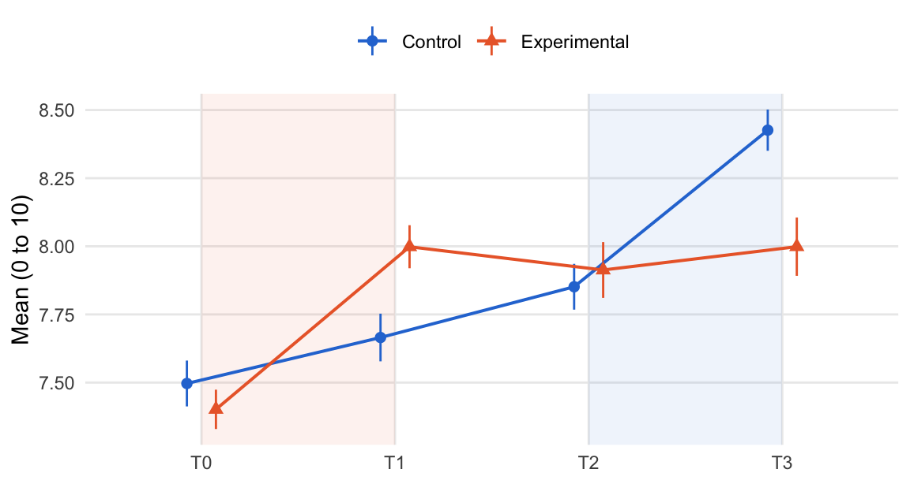
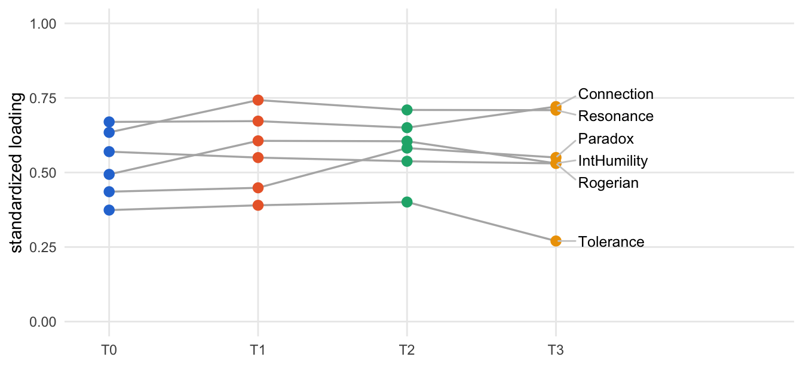
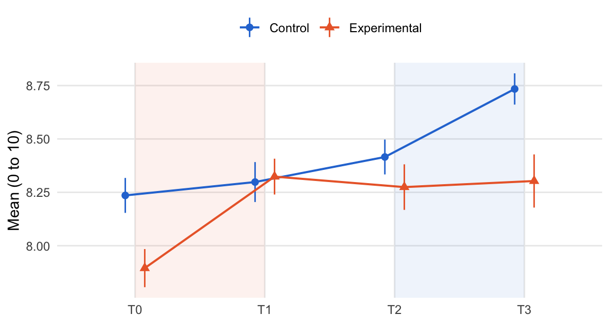
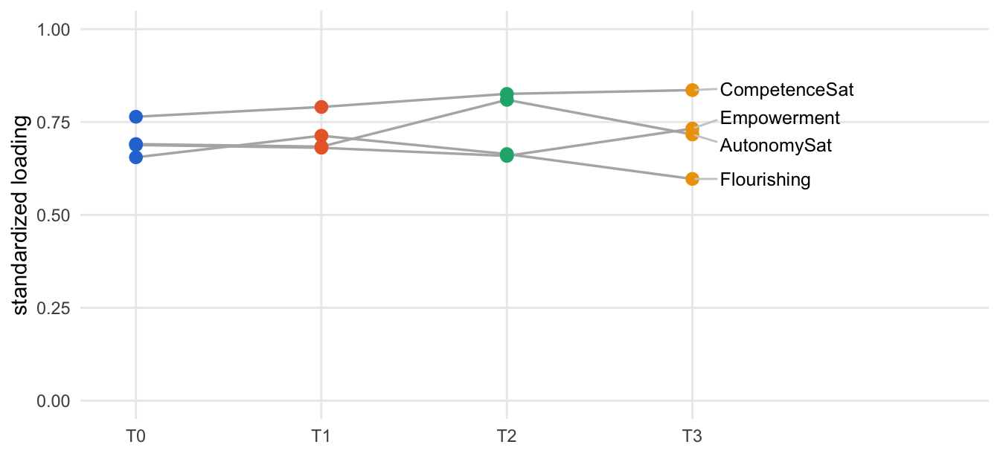
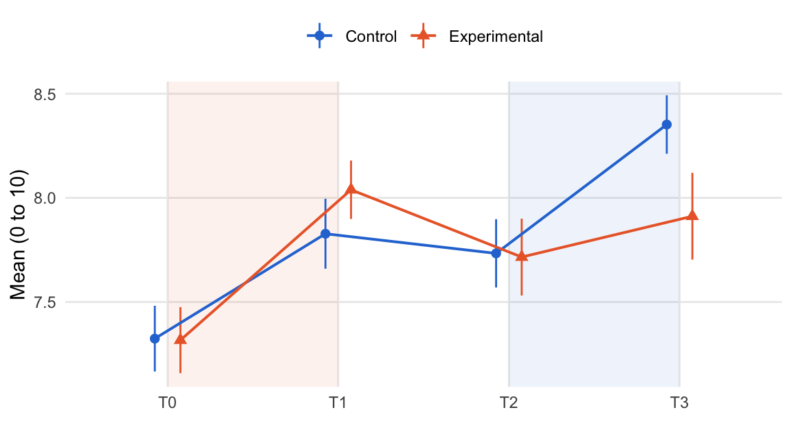
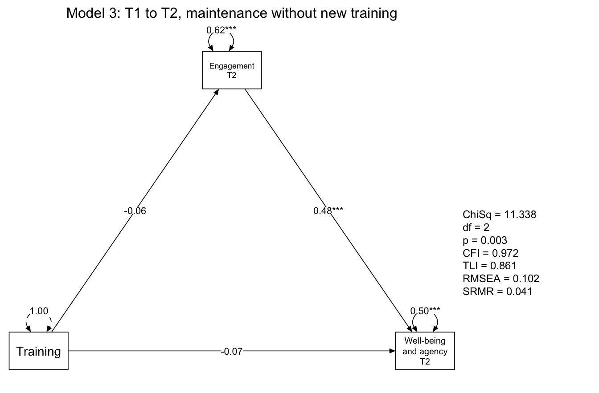
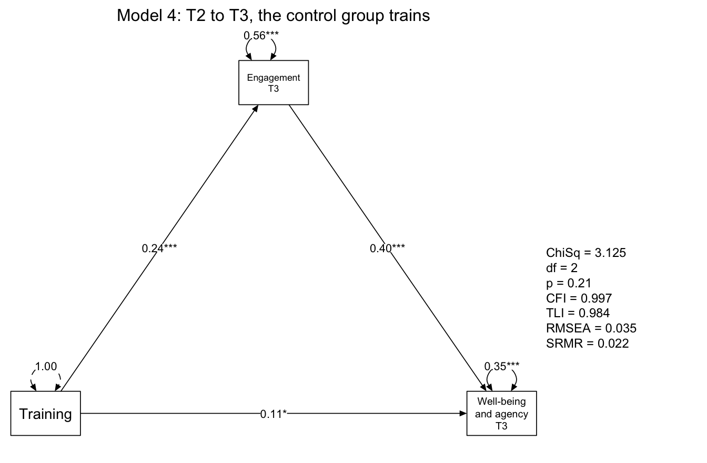

source("R/packages.R") # all packages (Chapter 1)
source("R/settings.R") # waves, conditions, folders (Chapter 1)
df <- readRDS("cache/df.rds") # one row per questionnaire (Chapter 2)
df_wide <- readRDS("cache/df_wide.rds") # one row per person (Chapter 2)
item_names <- names(select(df, ListenOther1:CompetenceNonFrustrated4))
source("R/scales.R") # the 23 scales (Chapter 2)
source("R/effect_sizes.R") # d_rm(), delta_d() (Chapter 9)
source("R/structure_composites.R") # composites (Chapter 18)
source("R/longitudinal_models.R") # waves, at(), wave_pairs (Chapter 7)19. Training effects on the new structure
NoteAbout this chapter
Re-estimates the training effects on the structure found in the data (Chapter 18): two factors, Engagement and Well-being and agency, their ten communities, and the single item on life satisfaction. The questions are those of Part C: does the trained group gain more in each training window, and does the training reach well-being through engagement? Each factor and the single item go through the same six steps: the score, its means by condition and wave, Δd in the two training windows, the preregistered multilevel model, whether the factor is measured the same way at all four waves (as a latent difference-in-differences would need), and what follows. The pathway from the training through Engagement to Well-being and agency is then estimated in the four windows of Chapter 12, each in five steps. A section at the end puts all results side by side. Exploratory: the structure was derived from the same questionnaires (at T0), so these results describe this sample and need replication. Feeds the post hoc section of the paper (Chapter 20).
19.1 How each factor and each window is examined
What happens to each factor? The two factors of Chapter 18 and the single item on life satisfaction go through the same six steps, in the same order and in four parts: the score, the effect, the measurement, and what follows. The diagram shows the path; the list below describes each step.
flowchart TB
subgraph P0["the score"]
direction LR
S1["<b>Step 1</b><br>the score"]
S1 --> S2["<b>Step 2</b><br>means by condition<br>and wave"]
end
subgraph P1["the effect: both groups"]
direction LR
S3["<b>Step 3</b><br>Δd in the two<br>training windows"]
S3 --> S4["<b>Step 4</b><br>the multilevel<br>model"]
end
subgraph P2["the measurement"]
direction LR
S5{{"<b>Step 5</b><br>the same measurement<br>over the waves"}}
end
V["<b>Step 6</b><br>what follows"]
P0 --> P1
P1 --> P2
P2 --> V
classDef all fill:#efeff2,stroke:#8a8a8a,color:#1d1d1f
classDef verdict fill:#ffffff,stroke:#1d1d1f,color:#1d1d1f
class S1,S2,S3,S4,S5 all
class V verdict
style P0 fill:#fafafa,stroke:#8a8a8a
style P1 fill:#fafafa,stroke:#8a8a8a
style P2 fill:#fafafa,stroke:#8a8a8a
The six steps in detail:
The score:
- The score. The communities and items of the factor (Chapter 18). A person’s factor score is the mean of the items they answered, and so is each community score. How consistent the score is: Cronbach’s α over the factor’s items at each wave, on the questionnaires that answer them all.
- Means by condition and wave. The mean and standard deviation of the score in each group at each wave, over all questionnaires of that wave, and a figure of their course: the bars span one standard error of the mean (SD / √n) on either side, the training of the experimental group (T0 to T1) is shaded orange, that of the control group (T2 to T3) blue, as in Chapter 9.
The effect:
- Δd in the two training windows. The repeated-measures Δd of Chapter 9, for the factor score and for each of its community scores: the d of the experimental group minus the d of the control group, each the mean change of the persons who answered at both waves divided by their standard deviation at the first wave, with a two-sided z-test, significant at p < .05. While the experimental group trains (T0 to T1), a positive Δd means that it gains more; while the control group trains (T2 to T3), a negative Δd means that the control group gains more. The effect of the factor is set beside those of the preregistered composites in the same window (Chapter 9).
- The multilevel model. The preregistered model of Chapter 10,
outcome ~ Occasion * condition + (1 | Municipality/id), fitted by REML and tested with Satterthwaite degrees of freedom. Each interaction termOccasionTk:conditionExperimentalcompares the change from T0 to wave k between the groups (positive: the experimental group changes more), tested two-sided at α = .05.
The measurement:
- The same measurement over the waves. A latent difference-in-differences (Chapter 11) compares latent means, and that needs scalar invariance over the waves (Chapter 7). Each factor gets the longitudinal model of Chapter 7, with its community scores as indicators: one factor per wave, the first community as the marker, the four factors correlated, and each community’s residual correlated with itself over the waves, fitted by robust maximum likelihood with missing waves by full information. The configural model needs a robust CFI of at least .90. The metric model holds the loadings equal over the waves, the scalar model the intercepts as well; a level holds when, against the level before, the robust CFI drops by no more than .010 and the robust RMSEA rises by no more than .015 (Chen, 2007; the cutoffs of Chapter 7 for samples of more than 300). A single item has no measurement model, so life satisfaction skips this step.
What follows:
- What follows. Where the results go next.
What happens in each window of the pathway? The question is whether the training reaches well-being through engagement. In each of the four windows of Chapter 12, Engagement at the end of the window is regressed on the training, and Well-being and agency on Engagement and the training; both regressions control for the two scores at the start of the window. Within a wave both scores are measured at the same time, so their order is an assumption of the model, as in Chapter 12. Each window goes through the same five steps, in three parts: the model, the effects, and what follows:
flowchart TB
subgraph P0["the model"]
direction LR
S1["<b>Step 1</b><br>the model"]
S1 --> S2{{"<b>Step 2</b><br>the path diagram:<br>does it fit?"}}
end
subgraph P1["the effects"]
direction LR
S3["<b>Step 3</b><br>the paths<br>and effects"]
S3 --> S4["<b>Step 4</b><br>against the<br>preregistered pathway"]
end
V["<b>Step 5</b><br>what follows"]
P0 --> P1
P1 --> V
classDef all fill:#efeff2,stroke:#8a8a8a,color:#1d1d1f
classDef verdict fill:#ffffff,stroke:#1d1d1f,color:#1d1d1f
class S1,S2,S3,S4 all
class V verdict
style P0 fill:#fafafa,stroke:#8a8a8a
style P1 fill:#fafafa,stroke:#8a8a8a
The model:
- The model. Its lavaan syntax, written out: the paths a (training → Engagement), b (Engagement → Well-being and agency) and c (training → Well-being and agency), and the indirect (a × b), direct (c) and total effects defined from them. Each model is fitted by maximum likelihood with 1,000 bootstrap draws and missing values by full information (FIML), as in Chapter 12.
- The path diagram. The three paths, standardized, with stars for p < .05, .01 and .001, and the fit of the model. The model keeps two degrees of freedom: it takes the training to be unrelated to the two scores at the start of the window. Where this holds, the model fits closely (χ² test with p above .05, CFI from .95, SRMR below .08).
The effects:
- The paths and effects. Unstandardized, with bias-corrected bootstrap intervals (95 %) and the p-value of the z-test. An effect carries when its interval excludes 0. An indirect effect that carries while the direct path does not is an indirect-only mediation; when both carry in the same direction, the mediation is complementary (Zhao et al., 2010).
- Against the preregistered pathway. The standardized indirect, direct and total effects on well-being, next to those of Chapter 12, where the training reaches the preregistered well-being composite (H3) through H1 and H2 (FIML in both).
What follows:
- What follows. Where the results of the window go next.
19.2 Data and tools
How are the new scores built? By the functions of R/new_structure.R: the map from each item to its community and factor (Chapter 18), the scores, the scores of each person side by side, the model of a window of the pathway, and the longitudinal model of a factor. The four windows of the pathway, with 1,000 bootstrap draws each, take about four minutes and run in a script of their own; the chapter reads their fits.
# Scores of the post hoc structure (Chapter 19): the two factors and the
# ten communities of Chapter 18, each the mean of a person's answered items.
# Needs R/structure_composites.R (composite_items(), factor_name()).
# item -> community (composite) -> factor, from the final structure
structure_map <- readRDS("cache/structure_final.rds")$assignment |>
composite_items() |>
mutate(factor = factor_name(unique(composite)), .by = higher) |>
# column names without spaces: engagement, wellbeing_agency
mutate(factor_score = if_else(factor == "Engagement", "engagement",
"wellbeing_agency"))
# the mean of the answered items, missing when none was answered
item_mean <- \(data, items) {
m <- rowMeans(data[items], na.rm = TRUE)
if_else(is.nan(m), NA, m)
}
# add the two factor scores and the ten composites (prefix new_)
add_new_scores <- \(data) {
factors <- split(structure_map$item, structure_map$factor_score)
composites <- split(structure_map$item,
str_c("new_", structure_map$composite))
data |>
bind_cols(map(c(factors, composites), \(items) item_mean(data, items)) |>
as_tibble())
}
# one row per person: the two factor scores at each wave, and the training
# indicators of Chapter 2
new_scores_wide <- \(data, wide) {
data |>
select(id, Occasion, engagement, wellbeing_agency) |>
pivot_wider(names_from = Occasion,
values_from = c(engagement, wellbeing_agency)) |>
left_join(select(wide, id, condition, train_eg, train_cg), by = "id")
}
# training -> engagement -> well-being and agency in one window, controlling
# for both scores at the start of the window
factor_mediation_model <- \(pre, post, treated) {
before <- str_c(c("engagement_", "wellbeing_agency_"), pre)
after <- str_c(c("engagement_", "wellbeing_agency_"), post)
controls <- str_c(before, collapse = " + ")
c(str_c(after[1], " ~ a*", treated, " + ", controls),
str_c(after[2], " ~ b*", after[1], " + c*", treated, " + ", controls),
str_c(before[1], " ~~ ", before[2]),
"indirect := a*b",
"direct := c",
"total := c + a*b") |>
str_c(collapse = "\n")
}
# Measurement invariance of the two factors over the waves (19.3). Needs
# R/longitudinal_models.R (waves, at(), wave_pairs).
# the community scores that measure a factor, in the order of Chapter 18
indicators_of <- \(f) {
communities <- structure_map |>
filter(factor_score == f) |>
distinct(composite) |>
arrange(composite)
str_c("new_", communities$composite)
}
# one row per person, in the order of `wide`: the ten community scores at
# each wave (new_Connection_T0, ...)
community_scores_wide <- \(data, wide) {
scores <- data |>
select(id, Occasion, starts_with("new_")) |>
pivot_wider(names_from = Occasion, values_from = starts_with("new_"),
names_glue = "{.value}_{Occasion}")
wide |>
select(id) |>
left_join(scores, by = "id")
}
# one factor per wave, its community scores as indicators (the first is
# the marker) and each score's residual correlated with itself over the
# waves; configural, metric (equal loadings) or scalar (equal intercepts,
# latent means free from T1 on), as in Chapter 7
factor_invariance_model <- \(f, level = c("configural", "metric",
"scalar")) {
level <- match.arg(level)
indicators <- indicators_of(f)
labels <- if (level == "configural") rep("", length(indicators)) else
str_c("lam", seq_along(indicators), "*")
labels[1] <- "1*"
loadings <- map_chr(waves, \(w) str_c(
"F_", w, " =~ ", str_c(labels, at(indicators, w), collapse = " + ")))
covariances <- map_chr(wave_pairs, \(p) str_c("F_", p[1], " ~~ F_", p[2]))
means <- if (level == "scalar") {
c("F_T0 ~ 0*1", str_c("F_", waves[-1], " ~ 1"))
} else {
str_c("F_", waves, " ~ 0*1")
}
intercepts <- if (level == "scalar") {
imap(indicators, \(x, j) str_c(at(x, waves), " ~ tau", j, "*1")) |>
unlist()
} else {
character()
}
across_waves <- map(indicators, \(x) map_chr(wave_pairs, \(p)
str_c(at(x, p[1]), " ~~ ", at(x, p[2])))) |> unlist()
c(loadings, covariances, means, intercepts, across_waves) |>
str_c(collapse = "\n")
}# Mediation on the post hoc structure (Chapter 19): training -> engagement
# -> well-being and agency, in the four windows of Chapter 12, 1,000
# bootstrap draws each (about 4 minutes)
# Run from swt-website/ after Chapter 18:
# Rscript scripts/new_structure_mediation.R
source("R/packages.R")
source("R/settings.R")
source("R/structure_composites.R")
source("R/new_structure.R")
source("R/mediation_model.R") # windows, fit_mediation() (Ch. 12)
df <- readRDS("cache/df.rds") |> add_new_scores()
df_wide <- readRDS("cache/df_wide.rds")
wide <- new_scores_wide(df, df_wide)
new_mediation <- mediation_windows |>
mutate(window = str_c(pre, " to ", post),
syntax = pmap_chr(list(pre, post, treated), factor_mediation_model),
fit = map(syntax, \(m) fit_mediation(m, wide))) |>
relocate(window, .after = model)
saveRDS(new_mediation, "cache/new_structure_mediation.rds")Which data? All questionnaires with the new scores added (the two factor scores engagement and wellbeing_agency, the ten community scores with the prefix new_), the community scores of each person at the four waves side by side for the longitudinal models (Step 5), the fits of the four windows of the pathway, and for comparison the Δd of the preregistered composites (Chapter 9) and their effects on well-being in the preregistered pathway (Chapter 12):
df <- add_new_scores(df)
communities_wide <- community_scores_wide(df, df_wide)
new_mediation <- readRDS("cache/new_structure_mediation.rds")
# Chapter 9: Δd of the three preregistered composites
preregistered_d <- readRDS("cache/means.rds")$effects |>
filter(outcome %in% c("H1_ListeningTogetherness",
"H2_CognitiveComplexity", "H3_Wellbeing"))
# Chapter 12: effects on H3, under the names of this chapter's model
preregistered <- readRDS("cache/mediation.rds")$estimators |>
filter(estimator == "fiml",
label %in% c("total_indirect", "directH3", "totalH3")) |>
transmute(model,
effect = c(total_indirect = "indirect", directH3 = "direct",
totalH3 = "total")[label],
beta_chapter12 = beta, p_chapter12 = p)The fits of the pathway include all 451 persons; those without any answer in a window carry no information on it.
Which tools? The analysis of each step is written out for every factor and every window. Only the figures and the fit table of the longitudinal models use small functions, defined once here:
# the means of both groups at the four waves, with one standard error on
# either side; the two training periods shaded in the colour of the group
plot_trajectory <- \(means) {
dodge <- position_dodge(width = .3) # the two groups side by side
means |>
mutate(se = SD / sqrt(n)) |>
ggplot(aes(x = Occasion, y = M, colour = condition, shape = condition,
group = condition)) +
scale_x_discrete() +
annotate("rect", xmin = 1, xmax = 2, ymin = -Inf, ymax = Inf,
fill = "#eb6834", alpha = .08) +
annotate("rect", xmin = 3, xmax = 4, ymin = -Inf, ymax = Inf,
fill = "#2a78d6", alpha = .08) +
geom_linerange(aes(ymin = M - se, ymax = M + se), linewidth = .5,
position = dodge) +
geom_line(linewidth = .7, position = dodge) +
geom_point(size = 2.2, position = dodge) +
scale_colour_manual(values = c(Control = "#2a78d6",
Experimental = "#eb6834")) +
labs(x = NULL, y = "Mean (0 to 10)", colour = NULL, shape = NULL) +
theme_minimal(base_size = 11) +
theme(legend.position = "top", panel.grid.minor = element_blank())
}# the standardized loading of each community score at each wave, from
# one longitudinal model
wave_colours <- c(T0 = "#2a78d6", T1 = "#eb6834", T2 = "#1baf7a",
T3 = "#eda100")
plot_loadings_waves <- \(fit) {
standardizedSolution(fit) |>
filter(op == "=~") |>
mutate(wave = str_remove(lhs, "^F_"),
community = str_remove(rhs, "_T[0-3]$") |> str_remove("^new_")) |>
ggplot(aes(wave, est.std, group = community)) +
geom_line(colour = "grey70", linewidth = .6) +
geom_point(aes(colour = wave), size = 2.6) +
ggrepel::geom_text_repel(data = \(d) filter(d, wave == "T3"),
aes(label = community), direction = "y",
nudge_x = .15, hjust = 0, size = 3.3,
segment.colour = "grey80") +
scale_colour_manual(values = wave_colours, guide = "none") +
scale_x_discrete(expand = expansion(add = c(.3, 1.6))) +
scale_y_continuous(limits = c(0, 1)) +
labs(x = NULL, y = "standardized loading") +
theme_minimal(base_size = 11) +
theme(panel.grid.minor = element_blank())
}# the fit of a longitudinal model in one row
fit_indices <- \(fit) {
fitMeasures(fit, c("chisq.scaled", "df", "cfi.robust", "rmsea.robust",
"srmr")) |>
as.list() |>
as_tibble() |>
set_names(c("chisq", "df", "CFI", "RMSEA", "SRMR"))
}# the fit beside the diagram, and its title above
fit_text <- \(fit, title = "") {
values <- fitMeasures(fit, c("chisq", "df", "pvalue", "cfi", "tli",
"rmsea", "srmr"))
labels <- c("ChiSq", "df", "p", "CFI", "TLI", "RMSEA", "SRMR")
text(1.15, -.4, labels = str_c(labels, " = ", round(values, 3),
collapse = "\n"),
pos = 4, cex = .75)
text(0, 1.4, labels = title, cex = 1)
}
# the three paths of a window as a path diagram: the training, and the
# two scores at the end of the window (the scores at its start, which both
# regressions control for, are left out); standardized estimates, stars
# for their significance
mediationPlot <- \(fit, title) {
ends <- lavNames(fit, "eqs.y") # the two scores at the end
training <- lavNames(fit, "ov.x") # train_eg or train_cg
starts <- setdiff(lavNames(fit, "ov"), c(ends, training))
wave <- str_sub(ends[1], -2)
semPlotModel(fit) |>
drop_nodes(starts) |>
semPaths(whatLabels = "std", style = "mx",
layout = matrix(c(NA, ends[1], NA,
training, NA, ends[2]),
nrow = 2, byrow = TRUE),
nCharNodes = 0, edge.color = "black", intercepts = FALSE,
asize = 2.5, sizeMan = 11, sizeMan2 = 7, edge.label.cex = .8,
mar = c(3, 2, 5, 9), DoNotPlot = TRUE) |>
mark_sig(fit, std_type = TRUE) |>
change_node_label(set_names(c(str_c("Engagement\n", wave),
str_c("Well-being\nand agency\n", wave),
"Training"),
c(ends, training)),
label.cex = 1) |>
plot()
fit_text(fit, title)
}19.3 The two factors
Which factors? Engagement and Well-being and agency, the two dimensions into which the ten composites group at T0 (Chapter 18.4). Both go through all six steps.
Engagement
Its path through the steps. One row per step below; the score rests on all questionnaires all questionnaires, the effects compare both groups both groups, the measurement model uses all persons all persons:
| Step | Question | Result | Next |
|---|---|---|---|
| 1 | What does the score hold? | six communities, the mean of all items answered | means |
| 2 | Where does each group stand? | close together in January; each rises most while it trains | Δd |
| 3 | Δd in the two training windows? | more in the trained group in both windows | multilevel model |
| 4 | The multilevel model? | clearly more at T1; gone by T2; at T3 the control group overtakes | measurement |
| 5 | The same measurement over the waves? | metric, not scalar | what follows |
| 6 | Where next? | the table of 19.6 |
The score · Steps 1 and 2
Step 1 · The score all questionnaires
Which communities and items make up the score?
eng_items <- structure_map |>
filter(factor_score == "engagement")
eng_items |>
summarise(k = n(), items = str_flatten_comma(item), .by = composite)| composite | k | items |
|---|---|---|
| Connection | 5 | KamaMuta1, ListenOther1, ListenSelf1, ListenSelf2, Understood1 |
| Resonance | 8 | Resonance1, Resonance2, Resonance3, Resonance4, Resonance5, Resonance6, Resonance7, Resonance8 |
| Paradox | 8 | ParadoxMindset2, ParadoxMindset3, ParadoxMindset4, ParadoxMindset5, ParadoxMindset6, ParadoxMindset7, ParadoxMindset8, ParadoxMindset9 |
| Tolerance | 4 | ToleranceDiversity2, ToleranceDiversity3, ToleranceDiversity4, ToleranceDiversity5 |
| Rogerian | 4 | Rogerian2, Rogerian4, Rogerian5, Rogerian6 |
| IntHumility | 5 | IntellectualHumility1, IntellectualHumility3, IntellectualHumility4, IntellectualHumility5, IntellectualHumility6 |
Six communities with 34 items: listening, being moved and feeling understood (Connection), positivity resonance, the paradox mindset, tolerance of diversity, the Rogerian schema and intellectual humility. The factor score is the mean of all the items a person answered, not the mean of the six community scores, so the two communities with eight items weigh most.
How consistent is the score at each wave? Cronbach’s α over its items:
eng_alpha <- tibble(wave = levels(df$Occasion)) |>
mutate(alpha = map_dbl(wave, \(w) df |>
filter(Occasion == w) |>
select(all_of(eng_items$item)) |>
cronbach()))
eng_alpha |>
mutate(alpha = round(alpha, 2))| wave | alpha |
|---|---|
| T0 | 0.89 |
| T1 | 0.91 |
| T2 | 0.91 |
| T3 | 0.90 |
The score is consistent at every wave (α from .89 to .91).
Next → Step 2, means by condition and wave: Where does each group stand, and how do the means move?
Step 2 · Means by condition and wave both groups
Where does each group stand, and how do the means move?
eng_means <- df |>
summarise(M = mean(engagement, na.rm = TRUE),
SD = sd(engagement, na.rm = TRUE),
n = sum(!is.na(engagement)),
.by = c(condition, Occasion)) |>
arrange(condition, Occasion)
eng_means |>
mutate(M_SD = sprintf("%.2f (%.2f)", M, SD)) |>
select(condition, Occasion, M_SD) |>
pivot_wider(names_from = Occasion, values_from = M_SD)| condition | T0 | T1 | T2 | T3 |
|---|---|---|---|---|
| Control | 7.50 (1.12) | 7.67 (1.06) | 7.85 (1.08) | 8.43 (0.90) |
| Experimental | 7.40 (0.97) | 8.00 (0.99) | 7.91 (1.04) | 8.00 (0.89) |
plot_trajectory(eng_means)
The two groups start close together in January (7.40 in the experimental group, 7.50 in the control group). Each rises most while it trains: the experimental group to 8.00 in March, the control group from 7.85 in September to 8.43 in December. While it waits, the control group rises a little from wave to wave as well.
Next → Step 3, δd in the two training windows: Does the trained group gain more, in the factor and in its communities?
The effect · Steps 3 and 4
Step 3 · Δd in the two training windows both groups
Does the trained group gain more, in the factor and in its communities?
eng_effects <- tribble(
~pre, ~post,
"T0", "T1",
"T2", "T3"
) |>
mutate(table = map2(pre, post, \(a, b)
delta_d(df, a, b, c("engagement", indicators_of("engagement"))))) |>
unnest(table) |>
mutate(window = str_c(pre, " to ", post))
eng_effects |>
select(window, outcome, d_EG, d_CG, delta_d, se, p, n_EG, n_CG) |>
mutate(across(c(d_EG, d_CG, delta_d, se), \(x) round(x, 2)),
p = round(p, 3))| window | outcome | d_EG | d_CG | delta_d | se | p | n_EG | n_CG |
|---|---|---|---|---|---|---|---|---|
| T0 to T1 | engagement | 0.59 | 0.16 | 0.43 | 0.10 | 0.000 | 148 | 134 |
| T0 to T1 | new_Connection | 0.51 | 0.24 | 0.27 | 0.11 | 0.017 | 148 | 134 |
| T0 to T1 | new_Resonance | 0.44 | 0.16 | 0.28 | 0.12 | 0.020 | 148 | 132 |
| T0 to T1 | new_Paradox | 0.53 | 0.06 | 0.48 | 0.11 | 0.000 | 148 | 133 |
| T0 to T1 | new_Tolerance | 0.08 | 0.06 | 0.02 | 0.12 | 0.850 | 147 | 134 |
| T0 to T1 | new_Rogerian | 0.46 | 0.19 | 0.28 | 0.12 | 0.020 | 148 | 133 |
| T0 to T1 | new_IntHumility | 0.00 | -0.03 | 0.03 | 0.13 | 0.826 | 148 | 132 |
| T2 to T3 | engagement | 0.02 | 0.51 | -0.49 | 0.15 | 0.001 | 51 | 125 |
| T2 to T3 | new_Connection | 0.17 | 0.60 | -0.43 | 0.16 | 0.008 | 51 | 124 |
| T2 to T3 | new_Resonance | 0.05 | 0.36 | -0.31 | 0.16 | 0.048 | 51 | 123 |
| T2 to T3 | new_Paradox | -0.01 | 0.41 | -0.42 | 0.17 | 0.015 | 51 | 124 |
| T2 to T3 | new_Tolerance | -0.08 | 0.05 | -0.12 | 0.17 | 0.461 | 51 | 125 |
| T2 to T3 | new_Rogerian | -0.07 | 0.33 | -0.40 | 0.14 | 0.005 | 51 | 124 |
| T2 to T3 | new_IntHumility | 0.00 | 0.23 | -0.23 | 0.16 | 0.160 | 51 | 124 |
Engagement rises more in the trained group in both windows (Δd = 0.43, p < .001, while the experimental group trains; Δd = -0.49, p = .001, while the control group trains). The same four communities carry the effect in both windows: Connection, Resonance, Paradox and Rogerian. Tolerance and IntHumility point the same way but hardly move (p above .10 in both windows).
Is the effect larger than that of the preregistered composites? Their Δd while the experimental group trains (Chapter 9):
preregistered_d |>
filter(pre == "T0", post == "T1") |>
select(outcome, delta_d, se, p) |>
mutate(across(c(delta_d, se), \(x) round(x, 2)), p = round(p, 3))| outcome | delta_d | se | p |
|---|---|---|---|
| H1_ListeningTogetherness | 0.20 | 0.11 | 0.070 |
| H2_CognitiveComplexity | 0.40 | 0.11 | 0.000 |
| H3_Wellbeing | 0.17 | 0.09 | 0.057 |
The effect of Engagement is larger than that of any preregistered composite in the same window (Δd from 0.17 to 0.40). Part of the difference is selection, not training: the item pruning of Chapter 15 set aside items that hardly moved with the training, so the new scores keep the responsive items. The results are hypotheses for a new sample, not tests.
Next → Step 4, the multilevel model: What does the preregistered multilevel model show?
Step 4 · The multilevel model both groups
What does the preregistered multilevel model show?
eng_mlm <- lmer(engagement ~ Occasion * condition + (1 | Municipality/id),
data = df)
eng_terms <- tidy(eng_mlm, effects = "fixed") |>
filter(str_detect(term, ":")) |>
transmute(wave = str_extract(term, "T[1-3]"), b = estimate,
se = std.error, df, p = p.value)
eng_terms |>
mutate(across(c(b, se, df), \(x) round(x, 2)), p = round(p, 3))| wave | b | se | df | p |
|---|---|---|---|---|
| T1 | 0.39 | 0.11 | 734.83 | 0.000 |
| T2 | 0.09 | 0.12 | 794.26 | 0.429 |
| T3 | -0.30 | 0.13 | 772.16 | 0.020 |
At T1 the experimental group has gained clearly more (b = 0.39, p < .001). By T2 the advantage is gone (b = 0.09, p = .429), and at T3 the freshly trained control group overtakes (b = -0.30, p = .020).
Next → Step 5, the same measurement over the waves: What does the longitudinal model look like?
The measurement · Step 5
Step 5 · The same measurement over the waves all persons
What does the longitudinal model look like? The configural model, as its lavaan syntax; with four waves and the residuals linked across them, a path diagram would not stay readable (Chapter 7). The metric model gives each loading a label (lam2 to lam6) that holds over the waves; the scalar model adds a label for each intercept (tau1 to tau6) and frees the latent means from T1 on.
factor_invariance_model("engagement", "configural") |>
cat()F_T0 =~ 1*new_Connection_T0 + new_Resonance_T0 + new_Paradox_T0 + new_Tolerance_T0 + new_Rogerian_T0 + new_IntHumility_T0
F_T1 =~ 1*new_Connection_T1 + new_Resonance_T1 + new_Paradox_T1 + new_Tolerance_T1 + new_Rogerian_T1 + new_IntHumility_T1
F_T2 =~ 1*new_Connection_T2 + new_Resonance_T2 + new_Paradox_T2 + new_Tolerance_T2 + new_Rogerian_T2 + new_IntHumility_T2
F_T3 =~ 1*new_Connection_T3 + new_Resonance_T3 + new_Paradox_T3 + new_Tolerance_T3 + new_Rogerian_T3 + new_IntHumility_T3
F_T0 ~~ F_T1
F_T0 ~~ F_T2
F_T0 ~~ F_T3
F_T1 ~~ F_T2
F_T1 ~~ F_T3
F_T2 ~~ F_T3
F_T0 ~ 0*1
F_T1 ~ 0*1
F_T2 ~ 0*1
F_T3 ~ 0*1
new_Connection_T0 ~~ new_Connection_T1
new_Connection_T0 ~~ new_Connection_T2
new_Connection_T0 ~~ new_Connection_T3
new_Connection_T1 ~~ new_Connection_T2
new_Connection_T1 ~~ new_Connection_T3
new_Connection_T2 ~~ new_Connection_T3
new_Resonance_T0 ~~ new_Resonance_T1
new_Resonance_T0 ~~ new_Resonance_T2
new_Resonance_T0 ~~ new_Resonance_T3
new_Resonance_T1 ~~ new_Resonance_T2
new_Resonance_T1 ~~ new_Resonance_T3
new_Resonance_T2 ~~ new_Resonance_T3
new_Paradox_T0 ~~ new_Paradox_T1
new_Paradox_T0 ~~ new_Paradox_T2
new_Paradox_T0 ~~ new_Paradox_T3
new_Paradox_T1 ~~ new_Paradox_T2
new_Paradox_T1 ~~ new_Paradox_T3
new_Paradox_T2 ~~ new_Paradox_T3
new_Tolerance_T0 ~~ new_Tolerance_T1
new_Tolerance_T0 ~~ new_Tolerance_T2
new_Tolerance_T0 ~~ new_Tolerance_T3
new_Tolerance_T1 ~~ new_Tolerance_T2
new_Tolerance_T1 ~~ new_Tolerance_T3
new_Tolerance_T2 ~~ new_Tolerance_T3
new_Rogerian_T0 ~~ new_Rogerian_T1
new_Rogerian_T0 ~~ new_Rogerian_T2
new_Rogerian_T0 ~~ new_Rogerian_T3
new_Rogerian_T1 ~~ new_Rogerian_T2
new_Rogerian_T1 ~~ new_Rogerian_T3
new_Rogerian_T2 ~~ new_Rogerian_T3
new_IntHumility_T0 ~~ new_IntHumility_T1
new_IntHumility_T0 ~~ new_IntHumility_T2
new_IntHumility_T0 ~~ new_IntHumility_T3
new_IntHumility_T1 ~~ new_IntHumility_T2
new_IntHumility_T1 ~~ new_IntHumility_T3
new_IntHumility_T2 ~~ new_IntHumility_T3Do the loadings and intercepts hold over the waves? The three levels, each fitted as in Chapter 7:
eng_configural <- cfa(factor_invariance_model("engagement", "configural"),
data = communities_wide, estimator = "MLR",
missing = "fiml")
eng_metric <- cfa(factor_invariance_model("engagement", "metric"),
data = communities_wide, estimator = "MLR",
missing = "fiml")
eng_scalar <- cfa(factor_invariance_model("engagement", "scalar"),
data = communities_wide, estimator = "MLR",
missing = "fiml")
eng_steps <- tibble(level = c("configural", "metric", "scalar"),
fit = list(eng_configural, eng_metric, eng_scalar)) |>
mutate(admissible = map_lgl(fit, \(f) suppressWarnings(
lavInspect(f, "post.check"))),
indices = map(fit, fit_indices)) |>
unnest(indices) |>
select(-fit) |>
mutate(delta_CFI = CFI - lag(CFI),
delta_RMSEA = RMSEA - lag(RMSEA),
holds = if_else(is.na(delta_CFI), CFI >= .90,
delta_CFI >= -.010 & delta_RMSEA <= .015))
eng_steps |>
mutate(across(where(is.double), \(x) round(x, 3)))| level | admissible | chisq | df | CFI | RMSEA | SRMR | delta_CFI | delta_RMSEA | holds |
|---|---|---|---|---|---|---|---|---|---|
| configural | TRUE | 282.820 | 210 | 0.963 | 0.043 | 0.058 | NA | NA | TRUE |
| metric | TRUE | 296.728 | 225 | 0.964 | 0.041 | 0.062 | 0.001 | -0.002 | TRUE |
| scalar | TRUE | 363.856 | 240 | 0.944 | 0.049 | 0.066 | -0.020 | 0.008 | FALSE |
How strongly does each community load at each wave? The standardized loadings of the configural model:
plot_loadings_waves(eng_configural)
The configural model fits well (robust CFI .963, RMSEA .043). Engagement keeps its loadings over the waves (metric: ΔCFI = .001), but not its intercepts (scalar: ΔCFI = -.020): its communities do not all shift by the same amount from wave to wave. Tolerance loads weakest at every wave, at most .40 and only .27 at T3, the wave at which its composite joins the other factor in Chapter 18.4. Under the rule of Chapter 7, Engagement is not scalar invariant over the four waves: its latent means cannot be compared over time, and no latent difference-in-differences is estimated on it.
Next → Step 6, what follows: Where does Engagement go from here?
What follows · Step 6
Step 6 · What follows
Where does Engagement go from here? Its training effects rest on the manifest score, Δd (Step 3) and the multilevel model (Step 4). In the pathway of 19.5 it is the mediator between the training and Well-being and agency. Chapter 20 counts the post hoc structure among the results that need a new sample: it was found in the same data, and neither factor is scalar invariant over the waves.
Well-being and agency
Its path through the steps. One row per step below; the score rests on all questionnaires all questionnaires, the effects compare both groups both groups, the measurement model uses all persons all persons:
| Step | Question | Result | Next |
|---|---|---|---|
| 1 | What does the score hold? | four communities; consistent at every wave | means |
| 2 | Where does each group stand? | the experimental group starts lower and catches up while it trains | Δd |
| 3 | Δd in the two training windows? | as for Engagement: more in the trained group in both windows | multilevel model |
| 4 | The multilevel model? | clearly more at T1; gone by T2; no significant reversal at T3 | measurement |
| 5 | The same measurement over the waves? | configural; the metric step fails on the RMSEA alone | what follows |
| 6 | Where next? | the table of 19.6 |
The score · Steps 1 and 2
Step 1 · The score all questionnaires
Which communities and items make up the score?
wa_items <- structure_map |>
filter(factor_score == "wellbeing_agency")
wa_items |>
summarise(k = n(), items = str_flatten_comma(item), .by = composite)| composite | k | items |
|---|---|---|
| Empowerment | 2 | Empowerment1, Empowerment2 |
| AutonomySat | 3 | AutonomySatisfaction2, AutonomySatisfaction3, AutonomySatisfaction4 |
| CompetenceSat | 4 | CompetenceSatisfaction1, CompetenceSatisfaction2, CompetenceSatisfaction3, CompetenceSatisfaction4 |
| Flourishing | 4 | Flourishing1, Flourishing3, Flourishing4, Flourishing7 |
Four communities with 13 items: empowerment, the satisfaction of the needs for autonomy and for competence, and flourishing. As for Engagement, the factor score is the mean of all the items a person answered.
How consistent is the score at each wave? Cronbach’s α over its items:
wa_alpha <- tibble(wave = levels(df$Occasion)) |>
mutate(alpha = map_dbl(wave, \(w) df |>
filter(Occasion == w) |>
select(all_of(wa_items$item)) |>
cronbach()))
wa_alpha |>
mutate(alpha = round(alpha, 2))| wave | alpha |
|---|---|
| T0 | 0.87 |
| T1 | 0.87 |
| T2 | 0.86 |
| T3 | 0.86 |
The score is consistent at every wave (α from .86 to .87).
Next → Step 2, means by condition and wave: Where does each group stand, and how do the means move?
Step 2 · Means by condition and wave both groups
Where does each group stand, and how do the means move?
wa_means <- df |>
summarise(M = mean(wellbeing_agency, na.rm = TRUE),
SD = sd(wellbeing_agency, na.rm = TRUE),
n = sum(!is.na(wellbeing_agency)),
.by = c(condition, Occasion)) |>
arrange(condition, Occasion)
wa_means |>
mutate(M_SD = sprintf("%.2f (%.2f)", M, SD)) |>
select(condition, Occasion, M_SD) |>
pivot_wider(names_from = Occasion, values_from = M_SD)| condition | T0 | T1 | T2 | T3 |
|---|---|---|---|---|
| Control | 8.24 (1.09) | 8.30 (1.13) | 8.42 (1.05) | 8.73 (0.87) |
| Experimental | 7.89 (1.20) | 8.32 (1.05) | 8.27 (1.08) | 8.30 (1.03) |
plot_trajectory(wa_means)
The experimental group starts lower in January (7.89 against 8.24). While it trains it catches up, to 8.32 in March, level with the control group (8.30). The control group rises most while it trains, from 8.42 in September to 8.73 in December.
Next → Step 3, δd in the two training windows: Does the trained group gain more, in the factor and in its communities?
The effect · Steps 3 and 4
Step 3 · Δd in the two training windows both groups
Does the trained group gain more, in the factor and in its communities?
wa_effects <- tribble(
~pre, ~post,
"T0", "T1",
"T2", "T3"
) |>
mutate(table = map2(pre, post, \(a, b)
delta_d(df, a, b, c("wellbeing_agency",
indicators_of("wellbeing_agency"))))) |>
unnest(table) |>
mutate(window = str_c(pre, " to ", post))
wa_effects |>
select(window, outcome, d_EG, d_CG, delta_d, se, p, n_EG, n_CG) |>
mutate(across(c(d_EG, d_CG, delta_d, se), \(x) round(x, 2)),
p = round(p, 3))| window | outcome | d_EG | d_CG | delta_d | se | p | n_EG | n_CG |
|---|---|---|---|---|---|---|---|---|
| T0 to T1 | wellbeing_agency | 0.35 | -0.02 | 0.37 | 0.09 | 0.000 | 148 | 134 |
| T0 to T1 | new_Empowerment | 0.34 | -0.06 | 0.40 | 0.12 | 0.001 | 147 | 133 |
| T0 to T1 | new_AutonomySat | 0.20 | 0.00 | 0.20 | 0.11 | 0.062 | 148 | 133 |
| T0 to T1 | new_CompetenceSat | 0.27 | 0.03 | 0.24 | 0.10 | 0.014 | 148 | 133 |
| T0 to T1 | new_Flourishing | 0.31 | -0.01 | 0.33 | 0.12 | 0.005 | 148 | 134 |
| T2 to T3 | wellbeing_agency | -0.08 | 0.28 | -0.36 | 0.13 | 0.005 | 51 | 125 |
| T2 to T3 | new_Empowerment | 0.14 | 0.25 | -0.11 | 0.15 | 0.474 | 51 | 125 |
| T2 to T3 | new_AutonomySat | -0.07 | 0.17 | -0.23 | 0.15 | 0.123 | 51 | 125 |
| T2 to T3 | new_CompetenceSat | 0.04 | 0.22 | -0.18 | 0.12 | 0.131 | 51 | 125 |
| T2 to T3 | new_Flourishing | -0.29 | 0.27 | -0.57 | 0.17 | 0.001 | 51 | 125 |
Well-being and agency follows the pattern of Engagement (Δd = 0.37, p < .001, while the experimental group trains; Δd = -0.36, p = .005, while the control group trains). While the experimental group trains, three of its four communities gain significantly, Empowerment, CompetenceSat and Flourishing; AutonomySat just misses (p = .062). While the control group trains, only Flourishing does (Δd = -0.57); the other three point the same way without reaching significance. The preregistered well-being composite misses significance in the first window (Δd = 0.17, p = .057, Chapter 9; table in Step 3 of Engagement); the caution about selection given there holds here too.
Next → Step 4, the multilevel model: What does the preregistered multilevel model show?
Step 4 · The multilevel model both groups
What does the preregistered multilevel model show?
wa_mlm <- lmer(wellbeing_agency ~ Occasion * condition +
(1 | Municipality/id),
data = df)
wa_terms <- tidy(wa_mlm, effects = "fixed") |>
filter(str_detect(term, ":")) |>
transmute(wave = str_extract(term, "T[1-3]"), b = estimate,
se = std.error, df, p = p.value)
wa_terms |>
mutate(across(c(b, se, df), \(x) round(x, 2)), p = round(p, 3))| wave | b | se | df | p |
|---|---|---|---|---|
| T1 | 0.41 | 0.10 | 726.81 | 0.000 |
| T2 | 0.14 | 0.12 | 778.79 | 0.218 |
| T3 | -0.10 | 0.13 | 758.69 | 0.446 |
At T1 the experimental group has gained clearly more (b = 0.41, p < .001). By T2 the advantage is gone (b = 0.14, p = .218), and unlike Engagement, the control group’s training brings no significant reversal at T3 (b = -0.10, p = .446).
Next → Step 5, the same measurement over the waves: What does the longitudinal model look like?
The measurement · Step 5
Step 5 · The same measurement over the waves all persons
What does the longitudinal model look like? The configural model, as its lavaan syntax; the metric model labels the loadings (lam2 to lam4), the scalar model the intercepts as well (tau1 to tau4):
factor_invariance_model("wellbeing_agency", "configural") |>
cat()F_T0 =~ 1*new_Empowerment_T0 + new_AutonomySat_T0 + new_CompetenceSat_T0 + new_Flourishing_T0
F_T1 =~ 1*new_Empowerment_T1 + new_AutonomySat_T1 + new_CompetenceSat_T1 + new_Flourishing_T1
F_T2 =~ 1*new_Empowerment_T2 + new_AutonomySat_T2 + new_CompetenceSat_T2 + new_Flourishing_T2
F_T3 =~ 1*new_Empowerment_T3 + new_AutonomySat_T3 + new_CompetenceSat_T3 + new_Flourishing_T3
F_T0 ~~ F_T1
F_T0 ~~ F_T2
F_T0 ~~ F_T3
F_T1 ~~ F_T2
F_T1 ~~ F_T3
F_T2 ~~ F_T3
F_T0 ~ 0*1
F_T1 ~ 0*1
F_T2 ~ 0*1
F_T3 ~ 0*1
new_Empowerment_T0 ~~ new_Empowerment_T1
new_Empowerment_T0 ~~ new_Empowerment_T2
new_Empowerment_T0 ~~ new_Empowerment_T3
new_Empowerment_T1 ~~ new_Empowerment_T2
new_Empowerment_T1 ~~ new_Empowerment_T3
new_Empowerment_T2 ~~ new_Empowerment_T3
new_AutonomySat_T0 ~~ new_AutonomySat_T1
new_AutonomySat_T0 ~~ new_AutonomySat_T2
new_AutonomySat_T0 ~~ new_AutonomySat_T3
new_AutonomySat_T1 ~~ new_AutonomySat_T2
new_AutonomySat_T1 ~~ new_AutonomySat_T3
new_AutonomySat_T2 ~~ new_AutonomySat_T3
new_CompetenceSat_T0 ~~ new_CompetenceSat_T1
new_CompetenceSat_T0 ~~ new_CompetenceSat_T2
new_CompetenceSat_T0 ~~ new_CompetenceSat_T3
new_CompetenceSat_T1 ~~ new_CompetenceSat_T2
new_CompetenceSat_T1 ~~ new_CompetenceSat_T3
new_CompetenceSat_T2 ~~ new_CompetenceSat_T3
new_Flourishing_T0 ~~ new_Flourishing_T1
new_Flourishing_T0 ~~ new_Flourishing_T2
new_Flourishing_T0 ~~ new_Flourishing_T3
new_Flourishing_T1 ~~ new_Flourishing_T2
new_Flourishing_T1 ~~ new_Flourishing_T3
new_Flourishing_T2 ~~ new_Flourishing_T3Do the loadings and intercepts hold over the waves?
wa_configural <- cfa(factor_invariance_model("wellbeing_agency",
"configural"),
data = communities_wide, estimator = "MLR",
missing = "fiml")
wa_metric <- cfa(factor_invariance_model("wellbeing_agency", "metric"),
data = communities_wide, estimator = "MLR",
missing = "fiml")
wa_scalar <- cfa(factor_invariance_model("wellbeing_agency", "scalar"),
data = communities_wide, estimator = "MLR",
missing = "fiml")
wa_steps <- tibble(level = c("configural", "metric", "scalar"),
fit = list(wa_configural, wa_metric, wa_scalar)) |>
mutate(admissible = map_lgl(fit, \(f) suppressWarnings(
lavInspect(f, "post.check"))),
indices = map(fit, fit_indices)) |>
unnest(indices) |>
select(-fit) |>
mutate(delta_CFI = CFI - lag(CFI),
delta_RMSEA = RMSEA - lag(RMSEA),
holds = if_else(is.na(delta_CFI), CFI >= .90,
delta_CFI >= -.010 & delta_RMSEA <= .015))
wa_steps |>
mutate(across(where(is.double), \(x) round(x, 3)))| level | admissible | chisq | df | CFI | RMSEA | SRMR | delta_CFI | delta_RMSEA | holds |
|---|---|---|---|---|---|---|---|---|---|
| configural | TRUE | 76.137 | 74 | 1.000 | 0.000 | 0.043 | NA | NA | TRUE |
| metric | TRUE | 92.749 | 83 | 0.996 | 0.020 | 0.054 | -0.004 | 0.020 | FALSE |
| scalar | TRUE | 96.343 | 92 | 0.999 | 0.009 | 0.055 | 0.003 | -0.012 | TRUE |
How strongly does each community load at each wave?
plot_loadings_waves(wa_configural)
The configural model fits closely (robust CFI 1.000, RMSEA 0). The four communities load between .60 and .84 at every wave, CompetenceSat the most at each. Well-being and agency fails the metric step on the RMSEA alone, which rises from 0 in the configural model by .020 (ΔCFI = -.004); the equal intercepts add no misfit beyond that (scalar against metric: ΔCFI = .003). Scalar invariance counts only if the metric step holds as well (Chapter 7), so under the rule of Chapter 7 Well-being and agency is not scalar invariant over the four waves either, and no latent difference-in-differences is estimated on it.
Next → Step 6, what follows: Where does Well-being and agency go from here?
What follows · Step 6
Step 6 · What follows
Where does Well-being and agency go from here? As for Engagement, its training effects rest on the manifest score, Δd (Step 3) and the multilevel model (Step 4), and Chapter 20 reads them with the same caution. In the pathway of 19.5 it is the outcome, reached from the training directly and through Engagement.
19.4 Life satisfaction on its own
Which outcome? The single item on life satisfaction, set apart from the factor to which it belongs. It goes through the steps of the factors; a single item has no measurement model, so Step 5 falls away.
Overall life satisfaction
Its path through the steps. One row per step below; the score rests on all questionnaires all questionnaires, the effects compare both groups both groups, the measurement model uses all persons all persons:
| Step | Question | Result | Next |
|---|---|---|---|
| 1 | Which item? | one item of the Flourishing community | means |
| 2 | Where does each group stand? | both start alike and rise while the experimental group trains | Δd |
| 3 | Δd in the two training windows? | significant only while the control group trains | multilevel model |
| 4 | The multilevel model? | no interaction significant | measurement |
| 5 | The same measurement over the waves? | a single item has no measurement model | what follows |
| 6 | Where next? | the table of 19.6 |
The score · Steps 1 and 2
Step 1 · The item all questionnaires
What does the item ask, and where does it sit in the new structure?
read_csv("data/item_wording.csv", show_col_types = FALSE) |>
filter(item == "Flourishing1") |>
left_join(select(structure_map, item, composite, factor), by = "item")| item | wording | reversed | composite | factor |
|---|---|---|---|---|
| Flourishing1 | Overall, how satisfied are you with life as a whole these days? (0 = Not satisfied at all, 10 = Completely satisfied) | FALSE | Flourishing | Well-being and agency |
Flourishing1 asks how satisfied the respondent is with life nowadays. It is one of the four items of the Flourishing community, within Well-being and agency.
Next → Step 2, means by condition and wave: Where does each group stand, and how do the means move?
Step 2 · Means by condition and wave both groups
Where does each group stand, and how do the means move?
life_means <- df |>
summarise(M = mean(Flourishing1, na.rm = TRUE),
SD = sd(Flourishing1, na.rm = TRUE),
n = sum(!is.na(Flourishing1)),
.by = c(condition, Occasion)) |>
arrange(condition, Occasion)
life_means |>
mutate(M_SD = sprintf("%.2f (%.2f)", M, SD)) |>
select(condition, Occasion, M_SD) |>
pivot_wider(names_from = Occasion, values_from = M_SD)| condition | T0 | T1 | T2 | T3 |
|---|---|---|---|---|
| Control | 7.32 (2.09) | 7.83 (2.02) | 7.73 (2.11) | 8.35 (1.67) |
| Experimental | 7.32 (2.13) | 8.04 (1.74) | 7.72 (1.86) | 7.91 (1.72) |
plot_trajectory(life_means)
Both groups start at the same level (7.32). While the experimental group trains, both rise: the experimental group to 8.04, the control group, without training, to 7.83. The control group rises most while it trains, from 7.73 to 8.35.
Next → Step 3, δd in the two training windows: Does the trained group gain more?
The effect · Steps 3 and 4
Step 3 · Δd in the two training windows both groups
Does the trained group gain more?
life_d <- tribble(
~pre, ~post,
"T0", "T1",
"T2", "T3"
) |>
mutate(table = map2(pre, post, \(a, b)
delta_d(df, a, b, "Flourishing1"))) |>
unnest(table) |>
mutate(window = str_c(pre, " to ", post))
life_d |>
select(window, d_EG, d_CG, delta_d, se, p, n_EG, n_CG) |>
mutate(across(c(d_EG, d_CG, delta_d, se), \(x) round(x, 2)),
p = round(p, 3))| window | d_EG | d_CG | delta_d | se | p | n_EG | n_CG |
|---|---|---|---|---|---|---|---|
| T0 to T1 | 0.35 | 0.11 | 0.24 | 0.13 | 0.062 | 146 | 132 |
| T2 to T3 | -0.13 | 0.28 | -0.41 | 0.17 | 0.013 | 50 | 125 |
Life satisfaction points the same way as the factors, but less clearly. While the experimental group trains, it rises more in the trained group without reaching significance (Δd = 0.24, p = .062); while the control group trains, the control group gains significantly more (Δd = -0.41, p = .013). A single item carries more measurement error than a score over several items, which shrinks its standardized effects.
Next → Step 4, the multilevel model: What does the preregistered multilevel model show?
Step 4 · The multilevel model both groups
What does the preregistered multilevel model show?
life_mlm <- lmer(Flourishing1 ~ Occasion * condition + (1 | Municipality/id),
data = df)
life_terms <- life_mlm |>
tidy(effects = "fixed") |>
filter(str_detect(term, ":")) |>
transmute(wave = str_extract(term, "T[1-3]"), b = estimate,
se = std.error, df, p = p.value)
life_terms |>
mutate(across(c(b, se, df), \(x) round(x, 2)), p = round(p, 3))| wave | b | se | df | p |
|---|---|---|---|---|
| T1 | 0.32 | 0.25 | 747.42 | 0.202 |
| T2 | 0.01 | 0.27 | 840.01 | 0.974 |
| T3 | -0.39 | 0.30 | 827.22 | 0.195 |
How is the variance shared? The random effects:
as_tibble(VarCorr(life_mlm)) |>
select(level = grp, sd = sdcor) |>
mutate(sd = round(sd, 3))| level | sd |
|---|---|
| id:Municipality | 1.180 |
| Municipality | 0.000 |
| Residual | 1.573 |
None of the three interactions is significant (b = 0.32, p = .202, at T1; b = -0.39, p = .195, at T3). The model estimates no variance between municipalities for this item.
Next → Step 5, no measurement model: Can the item be tested for invariance?
The measurement · Step 5
Step 5 · No measurement model all persons
Can the item be tested for invariance? No: with one item there is no factor whose loadings and intercepts could be held equal over the waves, so the latent comparison of Chapter 11 is out of reach as well.
Next → Step 6, what follows: Where does life satisfaction go from here?
What follows · Step 6
Step 6 · What follows
Where does life satisfaction go from here? Its Δd and multilevel interactions stand beside those of the two factors in the table at the end. On its own, life satisfaction confirms the direction of the effect on well-being and agency, with a significant effect only while the control group trains.
19.5 The pathway: training, engagement, well-being
Which windows? The four of Chapter 12: the experimental group trains (Model 1, T0 to T1), durability from baseline (Model 2, T0 to T2), maintenance without new training (Model 3, T1 to T2, which controls for a state already after the training and is read with care), and the replication while the control group trains (Model 4, T2 to T3, with train_cg in place of train_eg).
Model 1: the experimental group trains (T0 to T1)
Its path through the steps. One row per step below; every step uses all persons all persons:
| Step | Question | Result | Next |
|---|---|---|---|
| 2 | Does the model fit? | CFI and SRMR meet their criteria; the χ² test rejects it | paths |
| 3 | Which paths and effects carry? | a and b; the indirect effect through Engagement | against Chapter 12 |
| 4 | Against the preregistered pathway? | the indirect effect about as large; the total effect larger | what follows |
| 5 | Where next? | the table of 19.6 |
The model · Steps 1 and 2
Step 1 · The model all persons
What is regressed on what? The scores at T1 on the training and on each other, controlling for both scores at T0:
m1_model <- "
# a: the training -> Engagement
engagement_T1 ~ a*train_eg + engagement_T0 + wellbeing_agency_T0
# b: Engagement -> Well-being and agency, c: the training -> it
wellbeing_agency_T1 ~ b*engagement_T1 + c*train_eg + engagement_T0 +
wellbeing_agency_T0
# the scores at T0 covary
engagement_T0 ~~ wellbeing_agency_T0
# the effects
indirect := a*b
direct := c
total := c + a*b
"
m1_fit <- new_mediation$fit[[1]] # fitted in the scriptNext → Step 2, the path diagram: What does the model look like?
Step 2 · The path diagram all persons
What does the model look like?
m1_fit |>
mediationPlot("Model 1: T0 to T1, the experimental group trains")The diagram leaves out the two scores at T0, which both regressions control for. CFI and SRMR meet their criteria (CFI = .989, SRMR = .042), but the χ² test rejects the model (χ²(2) = 7.84, p = .020). Its two degrees of freedom are the relations of the training with the two scores at T0, which the model sets to zero. For Engagement this holds (r = -.05), but in January the experimental group stands lower on Well-being and agency (r = -.15; Step 2 of Well-being and agency in 19.3).
Next → Step 3, the paths and effects: Which paths and effects carry?
The effects · Steps 3 and 4
Step 3 · The paths and effects all persons
Which paths and effects carry? Unstandardized, with bias-corrected bootstrap intervals:
m1_effects <- parameterEstimates(m1_fit, boot.ci.type = "bca.simple") |>
filter(label %in% c("a", "b", "c", "indirect", "total")) |>
distinct(label, .keep_all = TRUE) |>
transmute(effect = label, est, ci_low = ci.lower, ci_high = ci.upper,
p = pvalue)
m1_effects |>
mutate(across(where(is.double), \(x) round(x, 3)))| effect | est | ci_low | ci_high | p |
|---|---|---|---|---|
| a | 0.398 | 0.217 | 0.573 | 0.000 |
| b | 0.506 | 0.389 | 0.610 | 0.000 |
| c | 0.101 | -0.066 | 0.290 | 0.260 |
| indirect | 0.201 | 0.117 | 0.303 | 0.000 |
| total | 0.302 | 0.122 | 0.513 | 0.003 |
The training raises Engagement (a = 0.40), and Engagement goes with Well-being and agency (b = 0.51). The indirect effect through Engagement is 0.201 [0.117, 0.303]; its interval excludes 0. The direct path is not significant (c = 0.10), the total effect is (0.30, p = .003): an indirect-only mediation (Zhao et al., 2010), with a total effect that the preregistered composites do not show in this window (Chapter 12.3).
Next → Step 4, against the preregistered pathway: Are the effects larger than those of the preregistered composites?
Step 4 · Against the preregistered pathway all persons
Are the effects larger than those of the preregistered composites? The standardized effects on well-being, here and in Chapter 12:
m1_standardized <- standardizedSolution(m1_fit) |>
filter(label %in% c("indirect", "direct", "total")) |>
distinct(label, .keep_all = TRUE) |>
transmute(effect = label, beta_new = est.std, p_new = pvalue)
m1_standardized |>
left_join(preregistered |> filter(model == 1) |> select(-model),
by = "effect") |>
mutate(across(where(is.double), \(x) round(x, 3)))| effect | beta_new | p_new | beta_chapter12 | p_chapter12 |
|---|---|---|---|---|
| indirect | 0.091 | 0.000 | 0.084 | 0.001 |
| direct | 0.046 | 0.255 | -0.038 | 0.291 |
| total | 0.137 | 0.002 | 0.046 | 0.276 |
The indirect effect does not grow: the path through Engagement is about as large as the total indirect effect of the preregistered model (β = .09 against .08). The total effect does grow (β = .14 against .05), and only the new outcome changes significantly.
Next → Step 5, what follows: Where do the results go from here?
What follows · Step 5
Step 5 · What follows
Where do the results go from here? The indirect effect of this window is the post hoc counterpart of the preregistered pathway; Chapter 20.3 sets it beside the serial mediation of Chapter 12. Model 4 asks whether it repeats while the control group trains.
Model 2: durability from baseline (T0 to T2)
Its path through the steps. One row per step below; every step uses all persons all persons:
| Step | Question | Result | Next |
|---|---|---|---|
| 2 | Does the model fit? | the χ² test rejects it, as in Model 1 | paths |
| 3 | Which paths and effects carry? | the training no longer raises Engagement; b remains | against Chapter 12 |
| 4 | Against the preregistered pathway? | both close to zero; none significant | what follows |
| 5 | Where next? | the table of 19.6 |
The model · Steps 1 and 2
Step 1 · The model all persons
What is regressed on what? The scores in September (T2) on the training of the experimental group, controlling for both scores at T0:
m2_model <- "
# a: the training -> Engagement
engagement_T2 ~ a*train_eg + engagement_T0 + wellbeing_agency_T0
# b: Engagement -> Well-being and agency, c: the training -> it
wellbeing_agency_T2 ~ b*engagement_T2 + c*train_eg + engagement_T0 +
wellbeing_agency_T0
# the scores at T0 covary
engagement_T0 ~~ wellbeing_agency_T0
# the effects
indirect := a*b
direct := c
total := c + a*b
"
m2_fit <- new_mediation$fit[[2]] # fitted in the scriptNext → Step 2, the path diagram: What does the model look like?
Step 2 · The path diagram all persons
What does the model look like?
m2_fit |>
mediationPlot("Model 2: T0 to T2, durability from baseline")The start is again January, with the same gap in Well-being and agency, and the χ² test rejects the model as in Model 1 (χ²(2) = 9.77, p = .008; CFI = .976, SRMR = .040, TLI = .878).
Next → Step 3, the paths and effects: Which paths and effects carry?
The effects · Steps 3 and 4
Step 3 · The paths and effects all persons
Which paths and effects carry?
m2_effects <- parameterEstimates(m2_fit, boot.ci.type = "bca.simple") |>
filter(label %in% c("a", "b", "c", "indirect", "total")) |>
distinct(label, .keep_all = TRUE) |>
transmute(effect = label, est, ci_low = ci.lower, ci_high = ci.upper,
p = pvalue)
m2_effects |>
mutate(across(where(is.double), \(x) round(x, 3)))| effect | est | ci_low | ci_high | p |
|---|---|---|---|---|
| a | 0.098 | -0.139 | 0.323 | 0.395 |
| b | 0.511 | 0.370 | 0.641 | 0.000 |
| c | -0.077 | -0.279 | 0.136 | 0.459 |
| indirect | 0.050 | -0.070 | 0.177 | 0.405 |
| total | -0.027 | -0.280 | 0.193 | 0.818 |
By September the training no longer raises Engagement (a = 0.10, interval [-0.14, 0.32]), while Engagement still goes with Well-being and agency (b = 0.51). The indirect effect is small, 0.050 [-0.070, 0.177], and its interval includes 0, as in Chapter 12; so do the direct and the total effect.
Next → Step 4, against the preregistered pathway: How do the effects compare with Chapter 12?
Step 4 · Against the preregistered pathway all persons
How do the effects compare with Chapter 12?
m2_standardized <- standardizedSolution(m2_fit) |>
filter(label %in% c("indirect", "direct", "total")) |>
distinct(label, .keep_all = TRUE) |>
transmute(effect = label, beta_new = est.std, p_new = pvalue)
m2_standardized |>
left_join(preregistered |> filter(model == 2) |> select(-model),
by = "effect") |>
mutate(across(where(is.double), \(x) round(x, 3)))| effect | beta_new | p_new | beta_chapter12 | p_chapter12 |
|---|---|---|---|---|
| indirect | 0.023 | 0.404 | 0.032 | 0.292 |
| direct | -0.036 | 0.459 | -0.003 | 0.944 |
| total | -0.013 | 0.819 | 0.029 | 0.575 |
Both pathways are close to zero in this window: no standardized effect reaches |β| = .05, here or in Chapter 12, and none is significant.
Next → Step 5, what follows: Where do the results go from here?
What follows · Step 5
Step 5 · What follows
Where do the results go from here? By September the effect of the first training no longer runs through Engagement, as in Chapter 12; the window adds no pathway of its own.
Model 3: maintenance without new training (T1 to T2)
Its path through the steps. One row per step below; every step uses all persons all persons:
| Step | Question | Result | Next |
|---|---|---|---|
| 2 | Does the model fit? | the worst of the four windows | paths |
| 3 | Which paths and effects carry? | b only; the indirect effect includes 0 | against Chapter 12 |
| 4 | Against the preregistered pathway? | none significant, here or in Chapter 12 | what follows |
| 5 | Where next? | the table of 19.6 |
The model · Steps 1 and 2
Step 1 · The model all persons
What is regressed on what? The scores in September (T2) on the training of the experimental group, controlling for both scores in March (T1), after that training:
m3_model <- "
# a: the training -> Engagement
engagement_T2 ~ a*train_eg + engagement_T1 + wellbeing_agency_T1
# b: Engagement -> Well-being and agency, c: the training -> it
wellbeing_agency_T2 ~ b*engagement_T2 + c*train_eg + engagement_T1 +
wellbeing_agency_T1
# the scores at T1 covary
engagement_T1 ~~ wellbeing_agency_T1
# the effects
indirect := a*b
direct := c
total := c + a*b
"
m3_fit <- new_mediation$fit[[3]] # fitted in the scriptNext → Step 2, the path diagram: What does the model look like?
Step 2 · The path diagram all persons
What does the model look like?
m3_fit |>
mediationPlot("Model 3: T1 to T2, maintenance without new training")
Of the four windows, this model fits worst (χ²(2) = 11.34, p = .003, RMSEA = .102). In March the experimental group had just trained, and the training goes with higher Engagement at T1 (r = .16), a relation the model sets to zero. As in Chapter 12, the misfit is the statistical side of the caution above: the window controls for a state that the training has already changed.
Next → Step 3, the paths and effects: Which paths and effects carry?
The effects · Steps 3 and 4
Step 3 · The paths and effects all persons
Which paths and effects carry?
m3_effects <- parameterEstimates(m3_fit, boot.ci.type = "bca.simple") |>
filter(label %in% c("a", "b", "c", "indirect", "total")) |>
distinct(label, .keep_all = TRUE) |>
transmute(effect = label, est, ci_low = ci.lower, ci_high = ci.upper,
p = pvalue)
m3_effects |>
mutate(across(where(is.double), \(x) round(x, 3)))| effect | est | ci_low | ci_high | p |
|---|---|---|---|---|
| a | -0.120 | -0.335 | 0.115 | 0.296 |
| b | 0.483 | 0.295 | 0.647 | 0.000 |
| c | -0.151 | -0.352 | 0.057 | 0.148 |
| indirect | -0.058 | -0.186 | 0.045 | 0.306 |
| total | -0.209 | -0.445 | 0.030 | 0.078 |
Between March and September the trained group does not move further: path a is slightly negative and not significant (a = -0.12), and the indirect effect, -0.058 [-0.186, 0.045], includes 0, as in Chapter 12. Engagement still goes with Well-being and agency (b = 0.48).
Next → Step 4, against the preregistered pathway: How do the effects compare with Chapter 12?
Step 4 · Against the preregistered pathway all persons
How do the effects compare with Chapter 12?
m3_standardized <- standardizedSolution(m3_fit) |>
filter(label %in% c("indirect", "direct", "total")) |>
distinct(label, .keep_all = TRUE) |>
transmute(effect = label, beta_new = est.std, p_new = pvalue)
m3_standardized |>
left_join(preregistered |> filter(model == 3) |> select(-model),
by = "effect") |>
mutate(across(where(is.double), \(x) round(x, 3)))| effect | beta_new | p_new | beta_chapter12 | p_chapter12 |
|---|---|---|---|---|
| indirect | -0.027 | 0.301 | 0.006 | 0.844 |
| direct | -0.070 | 0.145 | 0.004 | 0.924 |
| total | -0.097 | 0.072 | 0.010 | 0.847 |
None of the effects is significant, here or in Chapter 12. The total effect on Well-being and agency is slightly negative (β = -.10, p = .072), where the preregistered model finds none (β = .01).
Next → Step 5, what follows: Where do the results go from here?
What follows · Step 5
Step 5 · What follows
Where do the results go from here? Like Model 2, the window shows no pathway after the training; given its misfit, it is read with care.
Model 4: the control group trains (T2 to T3)
Its path through the steps. One row per step below; every step uses all persons all persons:
| Step | Question | Result | Next |
|---|---|---|---|
| 2 | Does the model fit? | it fits closely | paths |
| 3 | Which paths and effects carry? | the indirect effect through Engagement; a direct path remains | against Chapter 12 |
| 4 | Against the preregistered pathway? | the indirect effect smaller, the total effect larger; both significant | what follows |
| 5 | Where next? | the table of 19.6 |
The model · Steps 1 and 2
Step 1 · The model all persons
What is regressed on what? The scores in December (T3) on the training of the control group (train_cg), controlling for both scores in September (T2):
m4_model <- "
# a: the training -> Engagement
engagement_T3 ~ a*train_cg + engagement_T2 + wellbeing_agency_T2
# b: Engagement -> Well-being and agency, c: the training -> it
wellbeing_agency_T3 ~ b*engagement_T3 + c*train_cg + engagement_T2 +
wellbeing_agency_T2
# the scores at T2 covary
engagement_T2 ~~ wellbeing_agency_T2
# the effects
indirect := a*b
direct := c
total := c + a*b
"
m4_fit <- new_mediation$fit[[4]] # fitted in the scriptNext → Step 2, the path diagram: What does the model look like?
Step 2 · The path diagram all persons
What does the model look like?
m4_fit |>
mediationPlot("Model 4: T2 to T3, the control group trains")
The model fits closely (χ²(2) = 3.12, p = .210, CFI = .997, SRMR = .022). In September the control group had not trained yet, and the training correlates with neither score at T2 beyond |r| = .06.
Next → Step 3, the paths and effects: Which paths and effects carry?
The effects · Steps 3 and 4
Step 3 · The paths and effects all persons
Which paths and effects carry?
m4_effects <- parameterEstimates(m4_fit, boot.ci.type = "bca.simple") |>
filter(label %in% c("a", "b", "c", "indirect", "total")) |>
distinct(label, .keep_all = TRUE) |>
transmute(effect = label, est, ci_low = ci.lower, ci_high = ci.upper,
p = pvalue)
m4_effects |>
mutate(across(where(is.double), \(x) round(x, 3)))| effect | est | ci_low | ci_high | p |
|---|---|---|---|---|
| a | 0.459 | 0.238 | 0.651 | 0.000 |
| b | 0.417 | 0.284 | 0.541 | 0.000 |
| c | 0.223 | 0.034 | 0.437 | 0.028 |
| indirect | 0.192 | 0.087 | 0.309 | 0.001 |
| total | 0.414 | 0.228 | 0.643 | 0.000 |
The control group’s training raises Engagement (a = 0.46), and the indirect effect through Engagement is 0.192 [0.087, 0.309]; its interval excludes 0, as in Model 1. Unlike Model 1, a direct path remains (c = 0.22), so the mediation here is complementary: part of the effect runs beside Engagement.
Next → Step 4, against the preregistered pathway: How do the effects compare with Chapter 12?
Step 4 · Against the preregistered pathway all persons
How do the effects compare with Chapter 12?
m4_standardized <- standardizedSolution(m4_fit) |>
filter(label %in% c("indirect", "direct", "total")) |>
distinct(label, .keep_all = TRUE) |>
transmute(effect = label, beta_new = est.std, p_new = pvalue)
m4_standardized |>
left_join(preregistered |> filter(model == 4) |> select(-model),
by = "effect") |>
mutate(across(where(is.double), \(x) round(x, 3)))| effect | beta_new | p_new | beta_chapter12 | p_chapter12 |
|---|---|---|---|---|
| indirect | 0.098 | 0.001 | 0.122 | 0.000 |
| direct | 0.114 | 0.028 | -0.009 | 0.847 |
| total | 0.212 | 0.000 | 0.113 | 0.027 |
The path through Engagement is smaller than the total indirect effect of the preregistered model (β = .10 against .12); the total effect is larger (β = .21 against .11), and both are significant.
Next → Step 5, what follows: Where do the results go from here?
What follows · Step 5
Step 5 · What follows
Where do the results go from here? The window replicates the indirect effect of Model 1 while the control group trains. Together, the two training windows carry the post hoc pathway that Chapter 20.3 sets beside Chapter 12.
19.6 All results at a glance
How do the outcomes and windows compare? The tables bring together the objects of the sections above: one row per outcome with its training effects and its invariance, the Δd of every community, the pathway in the four windows, and its standardized effects beside those of Chapter 12.
# Δd of the two factors and their communities, in the order of the
# outcomes within each window
new_outcomes <- c("engagement", "wellbeing_agency",
str_c("new_", levels(structure_map$composite)))
new_effects <- bind_rows(eng_effects, wa_effects) |>
arrange(match(window, c("T0 to T1", "T2 to T3")),
match(outcome, new_outcomes))
# the interactions of the multilevel models
new_mlm <- bind_rows(eng_terms |> mutate(outcome = "engagement"),
wa_terms |> mutate(outcome = "wellbeing_agency")) |>
relocate(outcome)
# the three levels of invariance of both factors
factor_steps <- bind_rows(eng_steps |> mutate(factor = "engagement"),
wa_steps |> mutate(factor = "wellbeing_agency")) |>
relocate(factor)
# the paths and effects of the four windows, unstandardized and
# standardized beside Chapter 12
new_mediation_effects <- new_mediation |>
select(model, window) |>
mutate(effects = list(m1_effects, m2_effects, m3_effects,
m4_effects)) |>
unnest(effects)
effect_comparison <- new_mediation |>
select(model, window) |>
mutate(effects = list(m1_standardized, m2_standardized, m3_standardized,
m4_standardized)) |>
unnest(effects) |>
left_join(preregistered, by = c("model", "effect")) |>
mutate(effect = factor(effect, levels = c("indirect", "direct",
"total"))) |>
arrange(model, effect)outcome_alpha <- bind_rows(engagement = eng_alpha,
wellbeing_agency = wa_alpha,
.id = "outcome") |>
summarise(alpha = str_c(apa(min(alpha)), "–", apa(max(alpha))),
.by = outcome)
outcome_labels <- c(engagement = "Engagement",
wellbeing_agency = "Well-being and agency",
Flourishing1 = "Life satisfaction")
bind_rows(new_effects, life_d) |>
filter(outcome %in% names(outcome_labels)) |>
transmute(outcome, window = str_c(pre, "_", post), delta_d, p) |>
pivot_wider(names_from = window, values_from = c(delta_d, p)) |>
left_join(bind_rows(new_mlm,
life_terms |> mutate(outcome = "Flourishing1")) |>
filter(wave %in% c("T1", "T3")) |>
select(outcome, wave, b, p_b = p) |>
pivot_wider(names_from = wave, values_from = c(b, p_b)),
by = "outcome") |>
left_join(outcome_alpha, by = "outcome") |>
left_join(factor_steps |>
select(outcome = factor, level, holds) |>
pivot_wider(names_from = level, values_from = holds,
names_prefix = "holds_"),
by = "outcome") |>
mutate(outcome = outcome_labels[outcome]) |>
relocate(alpha, .after = outcome) |>
mutate(across(where(is.double), \(x) round(x, 3)))| outcome | alpha | delta_d_T0_T1 | delta_d_T2_T3 | p_T0_T1 | p_T2_T3 | b_T1 | b_T3 | p_b_T1 | p_b_T3 | holds_configural | holds_metric | holds_scalar |
|---|---|---|---|---|---|---|---|---|---|---|---|---|
| Engagement | .89–.91 | 0.43 | -0.495 | 0.000 | 0.001 | 0.394 | -0.299 | 0.000 | 0.020 | TRUE | TRUE | FALSE |
| Well-being and agency | .86–.87 | 0.37 | -0.355 | 0.000 | 0.005 | 0.409 | -0.097 | 0.000 | 0.446 | TRUE | FALSE | TRUE |
| Life satisfaction | NA | 0.24 | -0.410 | 0.062 | 0.013 | 0.323 | -0.393 | 0.202 | 0.195 | NA | NA | NA |
new_effects |>
filter(str_starts(outcome, "new_")) |>
mutate(community = str_remove(outcome, "^new_"),
factor = structure_map$factor[match(community,
structure_map$composite)]) |>
transmute(factor, community, window = str_c(pre, "_", post), delta_d,
p) |>
pivot_wider(names_from = window, values_from = c(delta_d, p)) |>
mutate(across(where(is.double), \(x) round(x, 3)))| factor | community | delta_d_T0_T1 | delta_d_T2_T3 | p_T0_T1 | p_T2_T3 |
|---|---|---|---|---|---|
| Engagement | Connection | 0.271 | -0.433 | 0.017 | 0.008 |
| Engagement | Resonance | 0.277 | -0.313 | 0.020 | 0.048 |
| Engagement | Paradox | 0.477 | -0.417 | 0.000 | 0.015 |
| Engagement | Tolerance | 0.022 | -0.124 | 0.850 | 0.461 |
| Engagement | Rogerian | 0.279 | -0.401 | 0.020 | 0.005 |
| Engagement | IntHumility | 0.028 | -0.229 | 0.826 | 0.160 |
| Well-being and agency | Empowerment | 0.401 | -0.110 | 0.001 | 0.474 |
| Well-being and agency | AutonomySat | 0.200 | -0.233 | 0.062 | 0.123 |
| Well-being and agency | CompetenceSat | 0.241 | -0.181 | 0.014 | 0.131 |
| Well-being and agency | Flourishing | 0.325 | -0.566 | 0.005 | 0.001 |
new_mediation_effects |>
mutate(estimate = sprintf("%.3f [%.3f, %.3f]", est, ci_low, ci_high),
p = round(p, 3)) |>
select(model, effect, estimate, p) |>
pivot_wider(names_from = model, values_from = c(estimate, p),
names_glue = "model{model}_{.value}")| effect | model1_estimate | model2_estimate | model3_estimate | model4_estimate | model1_p | model2_p | model3_p | model4_p |
|---|---|---|---|---|---|---|---|---|
| a | 0.398 [0.217, 0.573] | 0.098 [-0.139, 0.323] | -0.120 [-0.335, 0.115] | 0.459 [0.238, 0.651] | 0.000 | 0.395 | 0.296 | 0.000 |
| b | 0.506 [0.389, 0.610] | 0.511 [0.370, 0.641] | 0.483 [0.295, 0.647] | 0.417 [0.284, 0.541] | 0.000 | 0.000 | 0.000 | 0.000 |
| c | 0.101 [-0.066, 0.290] | -0.077 [-0.279, 0.136] | -0.151 [-0.352, 0.057] | 0.223 [0.034, 0.437] | 0.260 | 0.459 | 0.148 | 0.028 |
| indirect | 0.201 [0.117, 0.303] | 0.050 [-0.070, 0.177] | -0.058 [-0.186, 0.045] | 0.192 [0.087, 0.309] | 0.000 | 0.405 | 0.306 | 0.001 |
| total | 0.302 [0.122, 0.513] | -0.027 [-0.280, 0.193] | -0.209 [-0.445, 0.030] | 0.414 [0.228, 0.643] | 0.003 | 0.818 | 0.078 | 0.000 |
effect_comparison |>
mutate(across(where(is.double), \(x) round(x, 3)))| model | window | effect | beta_new | p_new | beta_chapter12 | p_chapter12 |
|---|---|---|---|---|---|---|
| 1 | T0 to T1 | indirect | 0.091 | 0.000 | 0.084 | 0.001 |
| 1 | T0 to T1 | direct | 0.046 | 0.255 | -0.038 | 0.291 |
| 1 | T0 to T1 | total | 0.137 | 0.002 | 0.046 | 0.276 |
| 2 | T0 to T2 | indirect | 0.023 | 0.404 | 0.032 | 0.292 |
| 2 | T0 to T2 | direct | -0.036 | 0.459 | -0.003 | 0.944 |
| 2 | T0 to T2 | total | -0.013 | 0.819 | 0.029 | 0.575 |
| 3 | T1 to T2 | indirect | -0.027 | 0.301 | 0.006 | 0.844 |
| 3 | T1 to T2 | direct | -0.070 | 0.145 | 0.004 | 0.924 |
| 3 | T1 to T2 | total | -0.097 | 0.072 | 0.010 | 0.847 |
| 4 | T2 to T3 | indirect | 0.098 | 0.001 | 0.122 | 0.000 |
| 4 | T2 to T3 | direct | 0.114 | 0.028 | -0.009 | 0.847 |
| 4 | T2 to T3 | total | 0.212 | 0.000 | 0.113 | 0.027 |
Both factors move with the training in both windows, as Δd and, at T1, in the multilevel model, while life satisfaction alone moves significantly only while the control group trains. Neither factor is scalar invariant over the four waves, so all these effects rest on manifest scores. In the two training windows of the pathway, the indirect effects through Engagement are about as large as, or smaller than, the total indirect effects of the preregistered model, while the total effects on Well-being and agency are larger: the larger effects of the new structure lie in the outcome, which moves more with the training than the preregistered well-being composite (Step 3 of Well-being and agency), not in a stronger path through the mediator.
Chapter 20 brings these post hoc results together with the preregistered ones.
saveRDS(list(effects = new_effects, mlm = new_mlm,
life_satisfaction = list(delta_d = life_d, mlm = life_terms),
mediation = new_mediation_effects,
comparison = effect_comparison,
invariance = factor_steps),
"cache/new_structure_effects.rds")